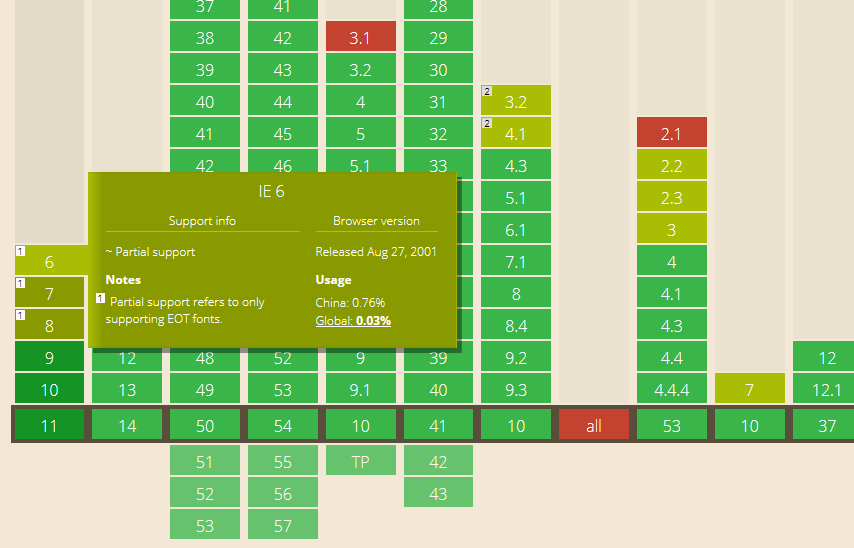
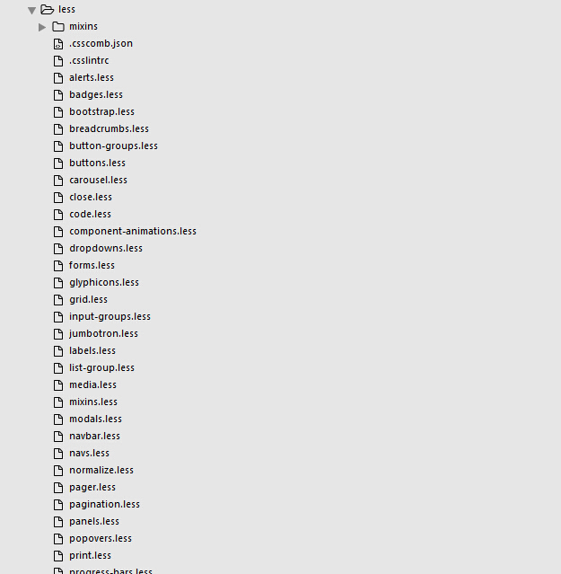
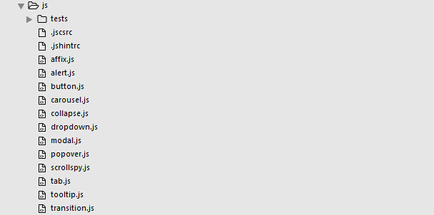
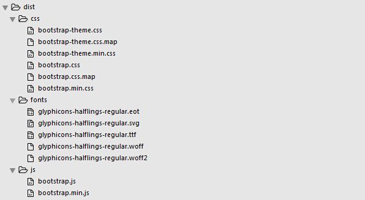

v 3.3.6
界面设计部
李渊
2016-11-29
在移动设备上，不支持鼠标指针事件，比如没有:hover状态、click事件有300ms的延迟
如有所需则要添加手势事件
栅格系统是通过一系列的行（row）和列（column）来组合创建页面，可以提高页面的设计及规范化
| 超小屏幕 手机 (<768px) | 小屏幕 平板 (≥768px) | 中等屏幕 桌面显示器 (≥992px) | 大屏幕 大桌面显示器 (≥1200px) | |
|---|---|---|---|---|
| 栅格系统行为 | 总是水平排列 | 开始是堆叠在一起的，当大于这些阈值时将变为水平排列C | ||
.container
最大宽度
|
None （自动） | 750px | 970px | 1170px |
| 类前缀 |
.col-xs-
|
.col-sm-
|
.col-md-
|
.col-lg-
|
| 列（column）数 | 12 | |||
| 最大列（column）宽 | 自动 | ~62px | ~81px | ~97px |
| 槽（gutter）宽 | 30px （每列左右均有 15px） | |||
| 可嵌套 | 是 | |||
| 偏移（Offsets） | 是 | |||
| 列排序 | 是 | |||
.col-md-1
.col-md-1
.col-md-1
.col-md-1
.col-md-1
.col-md-1
.col-md-1
.col-md-1
.col-md-1
.col-md-1
.col-md-1
.col-md-1
.col-md-8
.col-md-4
.col-md-4
.col-md-4
.col-md-4
.col-md-6
.col-md-6
.col-xs-1, .col-xs-2, .col-xs-3,
.col-xs-4, .col-xs-5, .col-xs-6,
.col-xs-7, .col-xs-8, .col-xs-9,
.col-xs-10, .col-xs-11, .col-xs-12 {
float: left;
}
.col-xs-1 {width: 8.333333%;}
.col-xs-2 {width: 16.666667%;}
.col-xs-3 {width: 25%;}
.col-xs-4 {width: 33.333333%;}
.col-xs-5 {width: 41.666667%;}
.col-xs-6 {width: 50%;}
.col-xs-7 {width: 58.333333%;}
.col-xs-8 {width: 66.666667%;}
.col-xs-9 {width: 75%;}
.col-xs-10 {width: 83.333333%;}
.col-xs-11 {width: 91.666667%;}
.col-xs-12 {width: 100%;}
@media (min-width: 768px) {
.col-sm-1, .col-sm-2, .col-sm-3,
.col-sm-4, .col-sm-5, .col-sm-6,
.col-sm-7, .col-sm-8, .col-sm-9,
.col-sm-10, .col-sm-11, .col-sm-12 {
float: left;
}
}
@media (min-width: 992px) {
.col-md-1, .col-md-2, .col-md-3,
.col-md-4, .col-md-5, .col-md-6,
.col-md-7, .col-md-8, .col-md-9,
.col-md-10, .col-md-11, .col-md-12 {
float: left;
}
}
@media (min-width: 1200px) {
.col-lg-1, .col-lg-2, .col-lg-3,
.col-lg-4, .col-lg-5, .col-lg-6,
.col-lg-7, .col-lg-8, .col-lg-9,
.col-lg-10, .col-lg-11, .col-lg-12 {
float: left;
}
}
background:url(images/icon01-1.png) no-repeat center center;background-position: -1px -20px;像制作字体一样，把画好的图标用Unicode编码，像使用字体一样使用图标
减少文件大小、减少请求链接数、可以像使用字体一样使用图标
不支持多色
解决办法？未来必热：SVG Sprite技术介绍
Firefox、Chrome、Safari 以及 Opera 支持 .ttf (True Type Fonts) 和 .otf (OpenType Fonts) 类型的字体。
Internet Explorer 9+ 支持新的 @font-face 规则，但是仅支持 .eot 类型的字体 (Embedded OpenType)。

.btn {
display: inline-block;
padding: 6px 12px;
font-size: 14px;
font-weight: normal;
line-height: 1.42857143;
text-align: center;
white-space: nowrap;
vertical-align: middle;
border-radius: 4px;
...
}
.btn-default {
color: #333;
background-color: #fff;
border-color: #ccc;
}
.btn-primary {
color: #fff;
background-color: #337ab7;
border-color: #2e6da4;
}
.btn-sm {
padding: 5px 10px;
font-size: 12px;
line-height: 1.5;
border-radius: 3px;
}
.btn-lg {
padding: 10px 16px;
font-size: 18px;
line-height: 1.3333333;
border-radius: 6px;
}
.btn01,.btn02,.btn03{
display: inline-block;
padding: 6px 12px;
font-size: 14px;
font-weight: normal;
line-height: 1.42857143;
text-align: center;
white-space: nowrap;
vertical-align: middle;
border-radius: 4px;
...
}
.btn01{
color: #333;
background-color: #fff;
border-color: #ccc;
}
.btn02{
color: #fff;
background-color: #337ab7;
border-color: #2e6da4;
}
.btn03{
padding: 5px 10px;
font-size: 12px;
line-height: 1.5;
border-radius: 3px;
color: #fff;
background-color: #337ab7;
border-color: #2e6da4;
}
Bootstrap的作者对css命名的解释：
面向对象的CSS
不是一门语言也不是一个框架
一种css书写模式和方法
对呀，怎么办？？？



一套基于Bootstrap制作的系统后台页面模板
一个Bootstrap的应用实例
Bootstrap + 第三方插件 + Angular + ACE的自己的定制、扩展和需求组织
在设计风格和布局方式上选择了Bootstrap
一套页面内容可以在不同的屏幕尺寸中展示使用
在做web时，这么多年来我们是怎么处理这么多的屏幕大小的？
根据对屏幕的宽度区段的划分，考虑每一区段的设计
考虑每一区段变化时的衔接
前提是剥离了具体的业务需求
布局 + 标题 + 导航 + 表格 + 列表 + 卡片式列表 + 表单 + 弹框 + 按钮 + 提示 + 图片 + 文章 + 视频 + 音频 + 幻灯片 + 树目录 + ...
答案：组件化